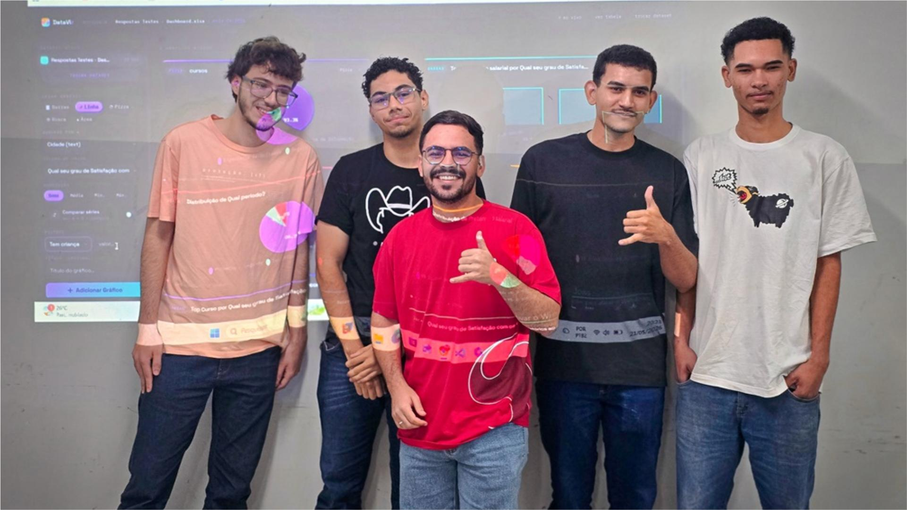
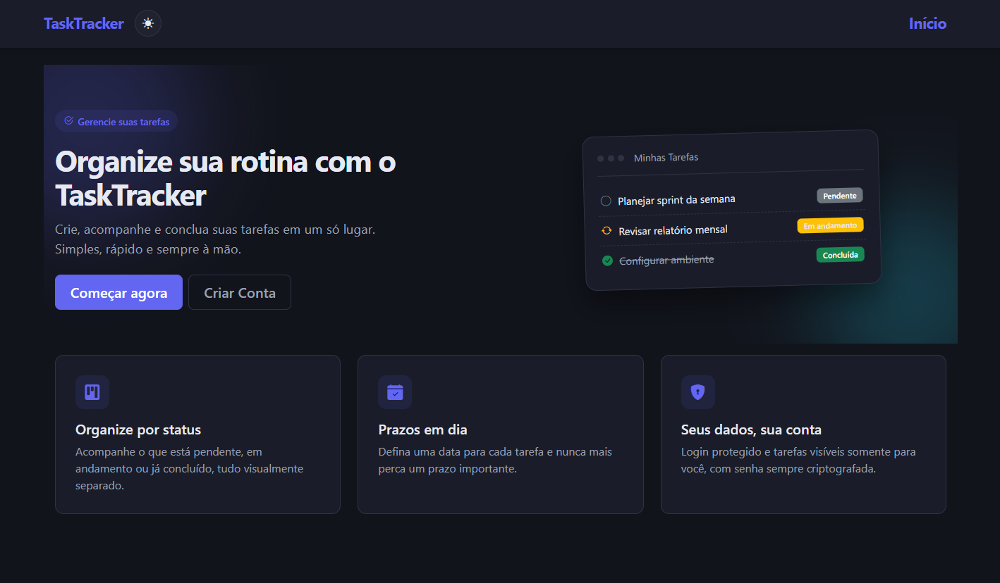
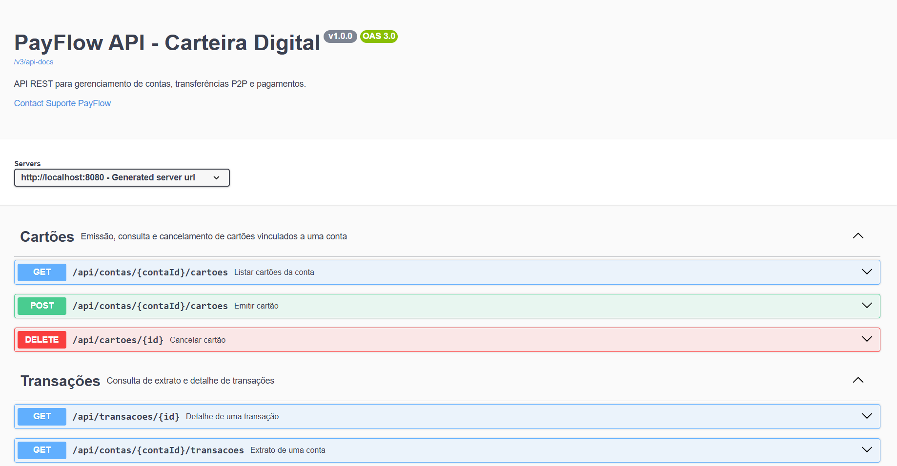

✦ RELÍQUIA ACADÊMICA
Dashboard para Análise e Categorização de Dados
Projeto com Estatística, Ciência de Dados e Inteligência Artificial, integrando ensino e práticaprofissional.
Ler o registro ↗Relíquias Forjadas
Artefatos construídos durante a jornada. Clique nas imagens para inspecionar cada relíquia.
Abrir Arsenal no GitHub ↗
Projeto com Estatística, Ciência de Dados e Inteligência Artificial, integrando ensino e práticaprofissional.
Ler o registro ↗
Aplicação full-stack em ASP.NET Core MVC, autenticação com privilégios Admin/User e PostgreSQL via EF Core.
Inspecionar no GitHub ↗ Atravessar o Portão ↗
Aplicação web em Next.js (React), com componentes reutilizáveis e estilização CSS.
Inspecionar no GitHub ↗
API REST para filmes, salas, sessões, ingressos e lanches, construída com NestJS, Prisma e PostgreSQL, documentada com Swagger.
Inspecionar no GitHub ↗
API REST em Java + Spring Boot para contas digitais, transferências P2P e pagamentos, com PostgreSQL e Swagger.
Inspecionar no GitHub ↗